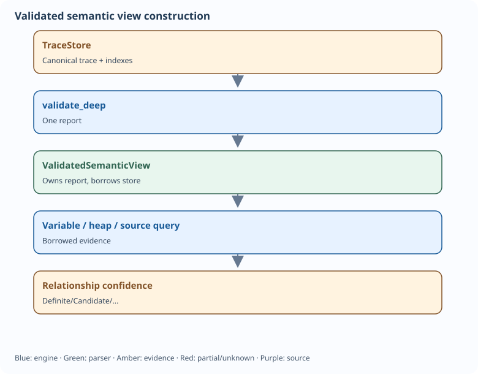
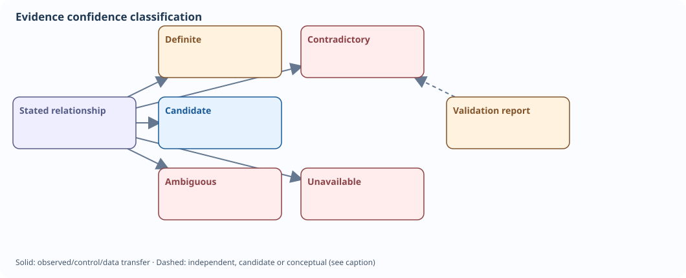
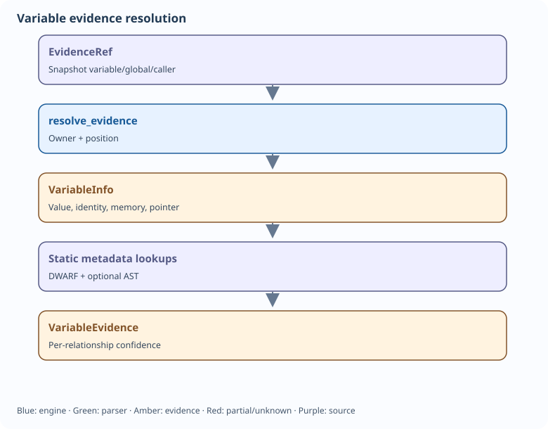
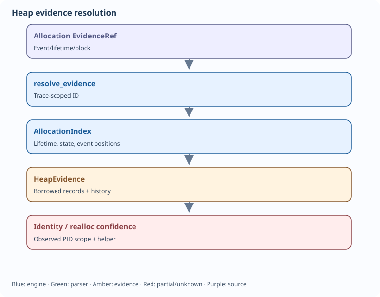
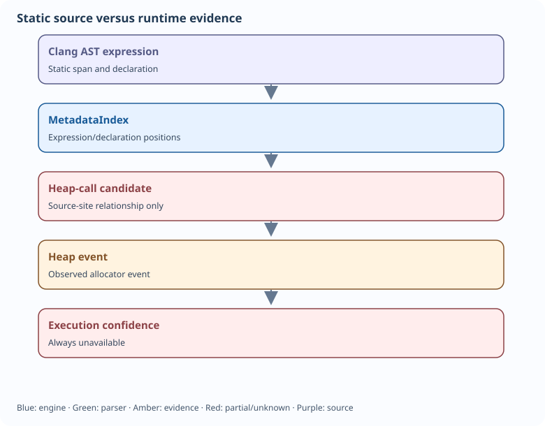
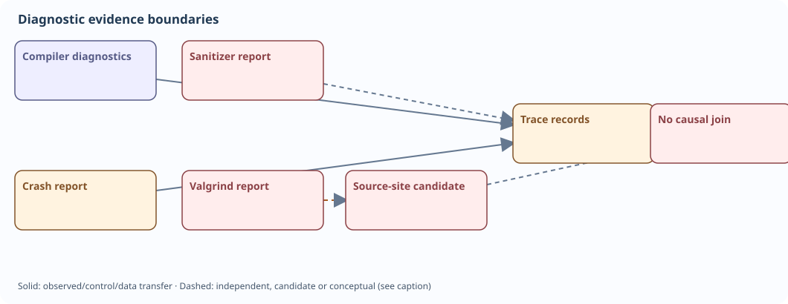

53 · TP-6 validated semantic evidence #
Key terms #
| Term | Plain meaning |
|---|---|
| Evidence view | A borrowed bundle of an original record, optional metadata and carefully scoped confidence about relationships. |
| Valid byte range | The captured prefix of an object's memory at one stop. It does not say the rest is zero or initialized. |
>
The big picture #
TP-6 is not a C interpreter and not Stage 2's src/semantic/. It is a thin, validated evidence layer over the canonical trace. It borrows records, runs deep validation once, and attaches a confidence to each stated relationship. It never invents an object graph, an execution proof or a pointer origin.
Construction and confidence #
Signature: pub fn validated_semantic(&self) -> ValidatedSemanticView<'_> (src/trace_parser/semantic.rs:36-44). It stores store: &'a TraceStore and an owned ValidationReport (:28-34). Construction calls validate_deep() once. Queries borrow the store and do not rerun validation. SemanticInputView::validated() delegates to the same method (:46-50).
EvidenceConfidence is Definite, Candidate, Ambiguous, Unavailable or Contradictory (:17-26). It belongs to a specific relationship, not to the execution as a whole. A variable value can be definite while its pointer origin is unavailable. A heap identity can be definite while its realloc link is ambiguous.
qualify is intentionally global for corruption: if the report is not structurally sound, every confidence becomes Contradictory (:61-67). Partial coverage and unavailable evidence do not trigger this; they remain local qualifications. This prevents a consumer from reading one clean-looking field while another imported relationship is contradictory.
Variable evidence #
Signature: pub fn variable(&self, reference: &EvidenceRef) -> QueryResult<VariableEvidence<'a>> (:72-129). It resolves the reference, accepts only snapshot-variable, snapshot-global or snapshot-caller-variable evidence, and rejects other categories with Unavailable.
For the borrowed VariableInfo, it performs three independent metadata lookups:
type_ref→store.type_entry(id);declaration_ref→store.dwarf_declaration(id);source_declaration_ref→store.source_declaration(id).
These are optional static links. A missing link is Unavailable, not a negative claim. Value confidence is Definite only when read_status == Valid and the recorded value is non-empty; this is a debugger observation, not proof of C initialization (:95-100). Memory and pointer views are built separately.
variable_target resolves a recorded variable identity at the same checkpoint (:134-201). It scans frame-zero variables, globals and caller variables, counts duplicate identities, and returns Ambiguous if more than one match exists. A target that is inactive is Contradictory; an active target with unavailable source scope is Candidate; an active target with a valid pointer and recorded scope is Definite. It never searches another stop or equates names and addresses.
Memory and pointer views #
MemoryEvidenceView::new treats valid_range as a prefix of captured bytes, not the object's full extent or initialized bytes (:444-484). Full captured bytes are Definite; a partial/truncated prefix is Candidate; missing or inconsistent bytes are Unavailable. unobserved_range records the requested-but-uncaptured tail.
PointerEvidence::new (:499-540) maps the recorded provenance status:
| Status / evidence | Confidence |
|---|---|
ambiguous_reuse | Ambiguous |
address_only, known_freed_address | Candidate |
history_incomplete, unknown status | Unavailable |
| null target with no status | Definite (null address, never heap identity) |
| variable identity without status | Candidate |
| no usable target/read | Unavailable |
definitive_allocation is always None under the present V2.2 status contract. An address candidate is exposed as address_candidate, not promoted.
Heap evidence #
heap_reference resolves a trace-scoped allocation event/lifetime/block reference to its allocation ID and delegates to heap (:205-219). A foreign reference fails before any numeric ID join.
heap(allocation_id) (:225-287) looks up the lifetime, final block, predecessor ID/lifetime and history through TP-2 indexes. pid_conflict is checked across events for the ID. Identity confidence is:
- contradictory on a PID conflict;
- unavailable for ID 0 or no lifetime/block;
- definite when history is complete, the lifetime PID is in the observed event PIDs, and the process scope is
VerifiedObservedPidsOnly; - candidate otherwise (recorded ID with incomplete/legacy scope).
HeapEvidence exposes the lifetime, block, old ID/lifetime, history, historical memory at the block's observed stop, identity confidence and realloc confidence (:543-560). Its events() iterator returns the original chronological events. A final state never asserts that intermediate events were retained.
Source expressions and diagnostics #
source_expression(id) (:291-317) borrows the AST expression, registry, candidate positions, ambiguities, referenced declaration and fusion summary. heap_call_confidence is Ambiguous if ambiguity records exist, Candidate if candidates exist, otherwise Unavailable; execution_confidence is always Unavailable. A source expression is static syntax, never a dynamic call proof.
checkpoint(index) returns the canonical checkpoint and its stop-local source/attempted position (:321-328). execution() exposes status, coverage, gaps, attempted and retained counts; confidence is definite only for complete configured coverage (:330-343). diagnostics() borrows compiler diagnostics, stage results, crash, sanitizer and Valgrind reports (:345-353). These are session-wide reports, not causal joins to a stop.
valgrind_error(index) returns an independent error plus trace-scoped reference. source_confidence is Candidate when source-site candidates exist, otherwise unavailable; primary_allocation_id is always None (:357-374). A Valgrind source line never becomes a primary-run allocation ID.
process_coverage() returns the typed scope, optional history and an unavailable confidence for unobserved descendants (:378-384). Unknown child activity remains unknown even if observed-PID history is complete.
Tests and boundaries #
tests/trace_parser_semantic_tp6.rs covers variable/pointer candidates, heap identity, source expressions, Valgrind, crash/gap and process scope. tests/trace_parser_realloc_f01.rs covers realloc confidence. The tests use real APIs and recorded traces; they do not prove every possible import. TP-6 deliberately stops at evidence: it does not infer C objects, initialization, active union members or complete process trees.
Diagram notes #
Validated view construction #


Evidence confidence classification #


Variable evidence resolution #


Heap evidence resolution #


Diagram notes for static and diagnostic evidence #
Static source versus runtime evidence #


Diagnostic evidence boundaries #

